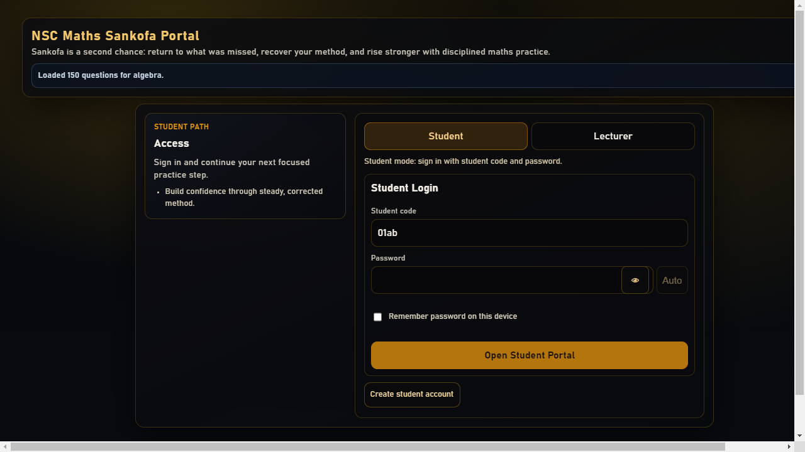

Student pathway
Structured learning, practice, assessment and improvement cycles designed around visible progression.
Home / Work
Selected work
The portfolio spans learning, operations, commerce and personal safety. Status labels distinguish controlled pilots, internal systems, MVPs and evaluation products from public production claims.

Learning product
A Next.js learning application for NATED computer practice, CAT and industry certification preparation. It supports controlled student intervention flows, lecturer release decisions and operational playbooks for pilot delivery.
Structured learning, practice, assessment and improvement cycles designed around visible progression.
Lecturer-only release and support controls keep content progression accountable.
Smoke, contract, journey and go-or-no-go checks support controlled rollout decisions.

Student and lecturer portal
A maths coaching portal with separate student and lecturer flows. Diagnose, Step Lab, Roadmap and feedback tools connect learner evidence to a focused next action.
Baseline and attempt evidence identify the topic and question that needs attention.
Guided work breaks a problem into reviewable steps instead of returning only a final answer.
Lecturers can review learner state, switch context and publish targeted support.

Role-controlled operations
An internal operations platform connecting attendance, safety, workforce administration, assets, maintenance, approvals and executive oversight. This public summary excludes credentials, personal data and private operational evidence.
Field, office and leadership roles work from the same operational record without receiving the same permissions.
Operational decisions link back to captured records, approvals and review history.
Web delivery is supported by Android and iOS application foundations for field use.

Brand and commerce
A custom commerce, booking, inventory, seller-tracking and business-intelligence MVP. The experience combines mobile-aware product discovery with the operational structure needed behind the storefront.
Product discovery, detail, cart and contact paths are designed as one coherent customer flow.
Inventory, booking and seller-tracking requirements are treated as product architecture, not afterthoughts.
Desktop and mobile evidence supports interface review across core public routes.
Public wording is deliberately limited because the product addresses sensitive personal-safety and evidence workflows.
Privacy-conscious safety design
An Android and web evaluation product exploring discreet access, offline guidance and protected evidence workflows for South African users. It is not a replacement for emergency, medical or legal services.
The interface explores low-visibility entry and rapid exit patterns for monitored-device contexts.
Core safety information and care-directory concepts are designed for limited connectivity.
The evaluation architecture examines encryption, event history and document preparation without promising legal outcomes.
Your product
Share the current process, the people affected and what evidence would show that the product works. We will recommend a sensible next step without forcing a predetermined technology.